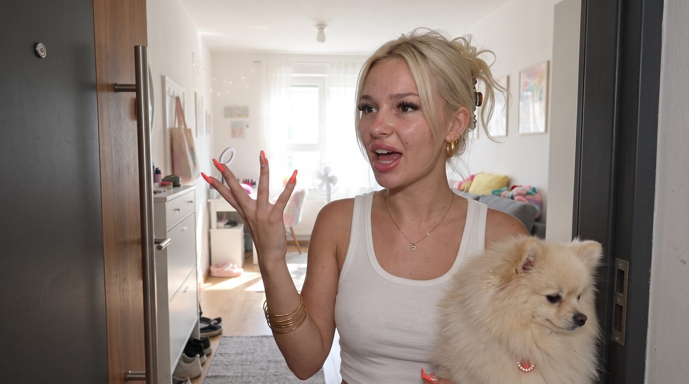
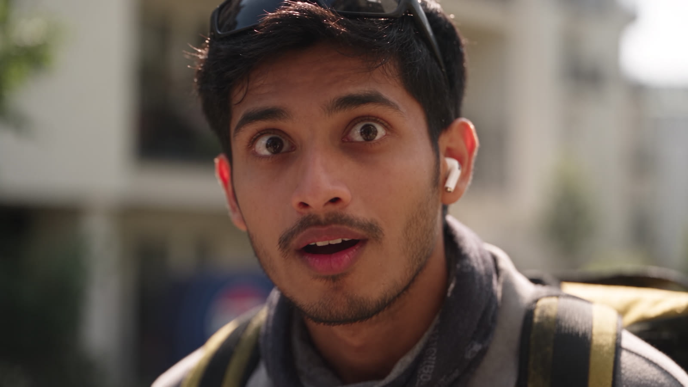

← Серия · ЭПИЗОД 03 · ПИЦЦА ПОД ДВЕРЬЮ · 45 с
Delivery
Жаркий летний полдень. Курьер несёт пиццу на последний этаж — и ни капли Pepsi. Pepsi Patrol уже слушает в рации.
Коротко
Задача
Превратить историю доставки из брифа в 45-секундную погоню, которая остаётся документальной, — и дать серии её лето.
Решение
Операция слежки через пиццу. Патруль ведёт курьера по рации, как наркокурьера, гонится за ним по лестнице — и в итоге угощает всех, даже курьера.
Результат
Готовый 45-секундный фильм на польском с переводом субтитрами, мастера для ТВ и веба от 4K ProRes до H.264.
Бриф
Доставка — одна из четырёх историй брифа клиента, с уже написанными репликами патруля в рации: «Зашёл». «У него сумка». «Всё ближе». «Сейчас. Заходим!»
Сделать доставку пиццы похожей на полицейскую операцию.
После ночной парковки и зимней ярмарки серии нужен был контраст: лето, жара, яркий полдень с короткими тенями и пылью, светящейся в лучах, — сезон, когда пьют больше всего.
Режиссёрское решение
Курьер поднимается на последний этаж с пиццей для пани Сандры и её шпица Броката. Патруль следит за каждым шагом по рации — и штурмует подъезд.
Чёрно-белая камера наблюдения с фишаем над двором открывает и закрывает фильм. Внутри невидимый любитель бежит по лестнице вместе с патрулём — плюс новая точка зрения: нагрудная камера Дарека, построенная на «ожидание — реальность».
Ленивый полдень на камере наблюдения → курьер бежит наверх → Сандра открывает: жвачка на косяке, пицца, Брокат → «Turbo!» — Дарек мчится мимо курьера → Ага спокойно едет на лифте → нагрудная камера Дарека: ожидание — реальность → Ага выходит мимо него и стучит → обвинение над куском пиццы → банка → медленный путь Сандры от безразличия к «Вау» → любопытного курьера ловят, когда он подглядывает, — и ему тоже достаётся банка → финал на камере наблюдения; трек звучит до последнего бита.
Радж, 25, любопытный, наивный и неудачник — красный электроскутер, горчичная термосумка. Пани Сандра — кокетливая домашняя маникюрщица: реалистичная и смешная, но не неприятная. Дарек вежлив и доброжелателен даже на полной скорости; Ага серьёзна, при исполнении, тараторит без агрессии.
Кастинг и мир
Мир утвердили движущимися карточками ещё до фильма: Сандра, Радж, двор и подъезд. Сначала — география: вход внизу, квартира Сандры наверху, стальной лифт на площадке, её дверь открывается внутрь.
Фотопробы






Видеопробы
Каждый новый персонаж получил видеопробу ещё до генерации первого плана. Переключите на «В фильме», чтобы увидеть и услышать того же человека в фильме; динамик включает звук, клик — увеличивает.
Меньше «инстаграма», больше жизни: асимметрия, небрежный пучок, жест «закручивает пучок» как её фирменное движение.
Сначала любопытство: как он оглядывается, колеблется и улыбается, когда его замечают.
Современный польский жилой квартал в духе Nowe Żerniki — и ни одной вывески или узнаваемого здания.
Обжитая площадка: растения, сандалии в луче, стальной лифт — сцена для всей погони.
Производство
Раскадровку мы сознательно не делали. Вместо неё был сценарий и долгое обсуждение всех аспектов фильма: чего мы от него хотим — крупного плана продукта, физической комедии, быстрого темпа — и какими должны быть герои. А потом весь фильм сняли сразу мультишотом. Это делает результат отчасти непредсказуемым, зато даёт фильму гораздо большую цельность, чем монтаж отдельно нарисованных и сгенерированных планов.
- 01
Сценарий и география
Реплики рации из брифа, 45 секунд действия и зафиксированный план этажей: кто поднимается, кто спускается, где лифт.
- 02
Движущиеся карточки
Видеокарточки Сандры, Раджа, двора и площадки, утверждённые до генерации любой сцены.
- 03
Черновые мультишоты
Seedance 2.5 в режиме Draft: весь фильм блоками, семь черновиков до HD-чернового монтажа.
- 04
Режиссёрские правки
Шесть раундов правок с таймкодами: направление движения, мизансцена, состояние каждого персонажа.
- 05
Точечные правки
Отдельные планы перегенерированы в HD; кобура убрана покадрово; этикетка банки возвращена трекингом.
- 06
Апскейл и цвет
Topaz ×2 до 4K, скриптовая коррекция под летний полдень, дефекты камеры, камера наблюдения с собственными данными на экране.
- 07
Музыка и звук
Собственный летний трек в двух вариантах: во время действия — будто из окна, под титры — в полную силу, до последнего бита.
Проблемы и решения
Модель построила подъезд двумя противоречащими друг другу конструкциями: лестница отдельно, лифт отдельно.
РЕШЕНИЕОдна география для всех планов; фразы, которые её ломали, пересняты, а не залатаны.
Персонажи вырастали из перил и ступенек; Дарек бежал не туда и даже оказывался в квартире Сандры.
РЕШЕНИЕКаждый план проверен на направление движения и этаж; склейки сдвинуты, чтобы Дарек бежал вверх.
Модель постоянно вооружала патруль: пистолет в кобуре.
РЕШЕНИЕВ серии нет оружия. Кобура убрана покадрово с трекингом.
Сандра выходила неприятной — блестящая кожа, жёсткий взгляд.
РЕШЕНИЕБолее мягкая кожа, более тёплая мимика и время на всю гамму эмоций — от безразличия до «Вау».
Ага становилась агрессивной, Дарек — высокомерным.
РЕШЕНИЕПереставлено: она при исполнении, он доброжелателен. Комедия — из серьёзности, не из грубости.
В дубле Kling пропала этикетка Pepsi MAX.
РЕШЕНИЕЭтикетка возвращена трекингом на банку, пальцы остаются поверх неё.
Изображение и звук
Жаркий летний полдень: короткие тени, тёплый свет, прорезающий подъезд, пыль, светящаяся в лучах. Коррекция по планам с теми же дефектами камеры, что и в серии; камера наблюдения над двором — чёрно-белая, с собственными данными на экране.
Собственный летний трек: во время действия звучит будто из чьего-то окна, под репликами; под титры — в полную силу и заканчивается на бите, без затемнения.
Технический паспорт
Титры
- Режиссёр
- Андрей ТимощукРежиссёр · AI-продакшн · монтаж · цвет · звук
- КЛИЕНТ
- Pepsi MAX Польша
- По мотивам
- британской кампании Pepsi MAX «SodaStop»
- Инструменты
- Magnific (Seedance 2.5, Seedream, Nano Banana, голоса ElevenLabs) · Topaz · After Effects · Python / ffmpeg · Claude